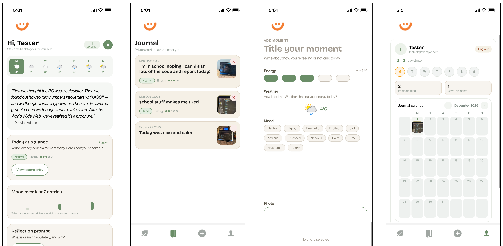

Mindful Moments — UX/UI Design & App Development
Mindful Moments is a mobile application designed to help users build and maintain mindfulness habits through daily reflection and journaling. Many mindfulness apps can overwhelm users with notifications, complex features, or performance tracking, which can create stress or guilt when users miss a day. Mindful Moments takes a different approach: it provides a calm, minimal space for reflection that encourages mindfulness without pressure or distraction.
Identifying the Problem
Mindfulness and meditation apps often add stress instead of reducing it. Excessive features, notifications, and performance tracking can make users feel guilty or pressured if they skip a day or fail to meet goals. This can discourage continued practice, especially for beginners or users who want a gentle, mindful experience. The challenge was to design a mobile app that supports mindfulness habits without overwhelming users, offering a calm and simple space for reflection rather than performance tracking or distraction.
Design Approach
Because mindfulness apps are often used during moments of vulnerability or emotional awareness, it was essential that the design feel calm, unobtrusive, and supportive. I intentionally avoided cluttered layouts and unnecessary features, focusing instead on a clean interface that allows users to journal and reflect with ease. The visual design uses soft, calming colors and gentle contrast, while typography and spacing were carefully chosen to enhance readability and reduce cognitive tension. Every design decision was guided by the goal of creating a peaceful, intentional experience rather than a productivity-focused tool.
Development & Implementation
The app was implemented in React Native, where I built core functionality including journaling input, navigation between sections, and local data storage. I developed reusable UI components for buttons, input fields, and cards, maintaining a consistent interface across the app. Iterative testing on mobile devices using Expo Go ensured responsive layouts and smooth interactions. Debugging and performance refinements were handled with React Native Debugger and console logs. Technical skills demonstrated: React Native, JavaScript, mobile UI design, component architecture, state management, Expo Go testing, debugging.
Outcome
The final prototype demonstrates a thoughtful approach to mindfulness and mobile UI development. Mindful Moments offers a simple, intentional journaling experience that encourages daily reflection without overwhelming users with notifications or analytics. The app successfully balances functionality and simplicity, providing a gentle environment for building mindfulness habits.

Challenges
One of the main challenges was finding the right balance between functionality and simplicity. It was tempting to add reminders, analytics, or social features, but these would have detracted from the app’s core purpose of calm reflection. Another challenge was maintaining a consistent emotional tone throughout the interface. Every design decision, from typography to spacing, needed to support calmness and clarity rather than efficiency or performance.
Reflection
This project strengthened my skills in React Native development, mobile UI design, and interaction design. It reinforced the importance of empathy and emotional awareness in digital experiences, showing how design and development choices can support users’ mental and emotional states. I learned how to turn prototypes into functional apps while maintaining a thoughtful, user-centered approach, and gained confidence in building mobile experiences that are both technically sound and emotionally supportive.
What I'd Do Differentlly
Looking back on Mindful Moments, there are a few areas I would approach differently in future projects. First, I would incorporate more structured user testing earlier in the development process to catch usability issues before implementing core functionality. While I iteratively tested the app on mobile devices, early testing with real users could have provided deeper insights into journaling behaviours and emotional interactions. Second, I would explore optional features that maintain simplicity, such as gentle reminders or customizable reflection prompts, giving users more flexibility without overwhelming them. Lastly, I would consider building a lightweight backend or cloud sync for journaling entries, allowing users to access their reflections across devices, while keeping the core experience minimal and distraction-free. These changes would enhance the app’s usability and accessibility, while still respecting the calm, intentional experience at the heart of Mindful Moments.